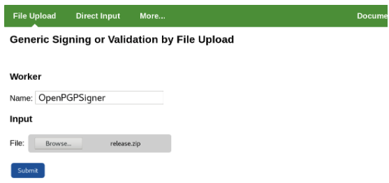

Set up OpenPGP Signer
The OpenPGP signer signs arbitrary data and produces an OpenPGP detached signature in binary or ASCII armored form, or a cleartext signature. For more information on the OpenPGP format, refer to RFC 4880.
Follow the steps below to set up the OpenPGP signer.
Prerequisite: Configured Crypto Worker
As with all signers, a crypto worker either using a software keystore or PKCS#11, should be available before setting up the OpenPGP signer.
If you do not already have a crypto worker configured, follow the steps below to set one up using a software keystore.
Add Crypto Worker
Do the following to set up a crypto worker using the sample keystore:
Select the AdminWeb Workers tab, and click Add.
Click From Template, select keystore-crypto.properties in the list, and click Next.
In the configuration text view, change the value for
WORKERGENID1.KEYSTOREPATHso that the path corresponds to your SignServer installation, for example:WORKERGENID1.KEYSTOREPATH=/home/username/signserver/res/test/dss10/dss10_keystore.p12.Click Apply.
Remember the name of the crypto worker (for example, CryptoTokenP12) for the next step in setting up the OpenPGP Signer.
Step 1 - Add OpenPGP Signer
Follow the steps below to add the OpenPGP signer using the sample configuration file openpgpsigner.properties as a template.
Select the SignServer AdminWeb Workers tab, and click Add to add a new worker.
Choose the method From Template.
Select openpgpsigner.properties in the Load from Template list and click Next.
Change the sample configuration properties as needed, for example:
Update the NAME property.
Update the CRYPTOTOKEN property to the name of your crypto worker, in the previous example, named CryptoTokenP12.
Update the AUTHTYPE so that the worker cannot be accessed without authentication (if using a live system).
Update DEFAULTKEY to an existing key (or do this in a later step).
Click Apply to load the configuration and list the worker in the All Workers list.
Select the added worker in the list to open the Worker page.
Check if the Worker status is Offline and if there are any errors listed. The "No key available for purpose" message means that the DEFAULTKEY property does not point to an existing key in the crypto token. In that case, either update the DEFAULTKEY property to point to an existing key or do the following to generate a new key to use with this signer:
Click Renew key and specify the following:
Set a Key Algorithm, for example "RSA" or "ECDSA".
Set a Key Specification, for example the key length "2048" (for RSA), or the cure name "prime256v1" (for ECDSA).
Update the New Key Alias to the name of DEFAULTKEY property (typically change to the same value as the Old Key Alias).
Click Generate.
Select the worker in the list and confirm that the Worker status is Active and without errors listed. If not, confirm that the DEFAULTKEY property is correct and check in the Crypto Token tab of the crypto worker that a key with the specified name exists.
For all OpenPGPSigner specific properties, see OpenPGP Signer.
Step 2 - Add User ID / Certification
Follow the steps below to add User ID / Certification for the OpenPGP public key using the Generate CSR option.
Select the SignServer AdminWeb Workers tab.
Click the OpenPGP worker.
Click Generate CSR.
Specify a Signature Algorithm, for example "SHA256withRSA" or "SHA256withECDSA". Note that the OpenPGPSigner also accepts just specifying the OpenPGP Hash Algorithm.
Specify DN as the wanted User Id, for example "Signer001 (Code Signing) <signer001@example.com>".
Click Generate, and then click Download.
Open the downloaded file using any text editor and copy its content.
Select the worker and click the Configuration tab.
For the PGPPUBLICKEY property, click Edit.
Paste the public key content in the Value field, and click Submit.
Click Status Summary and confirm that fields like PGP Key ID and PGP Public key are listed. Also, note that the User ID is listed.
Step 3 - Generate and Store Revocation Certificate
To generate and store a revocation certificate:
On the AdminWeb Worker page, click the Configuration tab.
For the GENERATE_REVOCATION_CERTIFICATE property click Edit.
Set Value "true" and click Submit.
Click Generate CSR.
Specify a Signature Algorithm, for example "SHA256withRSA" or "SHA256withECDSA". Note that the OpenPGPSigner also accepts just specifying the OpenPGP Hash Algorithm.
Specify any DN value as this field is not used when generating a revocation certificate.
Click Generate, and then click Download.
Store the revocation certificate securely so that it can be accessed by authorized personnel in case the public key needs to be revoked.
Click the Configuration tab.
For the GENERATE_REVOCATION_CERTIFICATE property, click Edit.
Set Value "false" and click Submit.
Step 4 - Test Signing
The following example shows how to sign using the SignServer Public Web. You can test signing using any of the SignServer client interfaces.
Click Client Web.

Under File Upload, specify the Worker name used, for example, OpenPGPSigner.
Select the file to create a detached signature for, for example, release.zip.
Click Submit and store the resulting signature file, for example, release.zip.asc.
Step 5 - Verify Signature
The following example shows how to verify the signature using the OpenPGP tool GnuPG. It should be possible to use any OpenPGP tool to verify the signature.
Example for GnuPG
Run the following to verify the signature using GnuPG:
$ gpg --verify release.zip.asc release.zipIf needed, first import the public key to GnuPG before verifying the signature in the third step:
Store the public key (i.e. from PGPPUBLICKEY property) as signer001-pub.asc.
Import the key to GnuPG:
$ gpg --importsigner001-pub.ascRun the following to verify the signature:
$ gpg --verify release.zip.asc release.zip
Step 6 - (Optional) Distribute the OpenPGP Public Key
The OpenPGP Public Key can optionally be published to online key servers or distributed to clients otherwise.